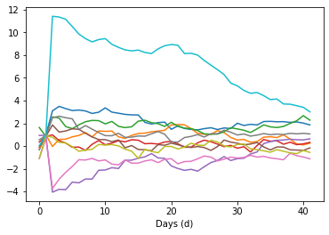
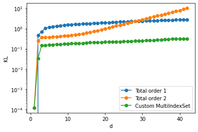
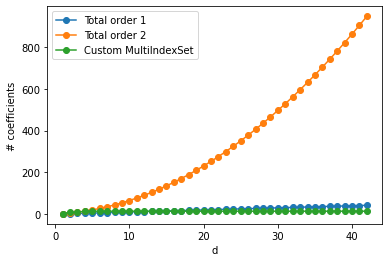

Stochastic volatility#
At first we import a few common packages
[1]:
import time
import os
import numpy as np
import scipy
import scipy.stats
from scipy.stats import multivariate_normal
from pandas import MultiIndex
import matplotlib.pyplot as plt
Now we set the number of threads to be used by Kokkos and import MParT.
[2]:
os.environ['KOKKOS_NUM_THREADS'] = '8'
from mpart import *
print('Kokkos is using', Concurrency(), 'threads')
Kokkos is usingKokkos::OpenMP::initialize WARNING: OMP_PROC_BIND environment variable not set
In general, for best performance with OpenMP 4.0 or better set OMP_PROC_BIND=spread and OMP_PLACES=threads
For best performance with OpenMP 3.1 set OMP_PROC_BIND=true
For unit testing set OMP_PROC_BIND=false
Kokkos::OpenMP::initialize WARNING: You are likely oversubscribing your CPU cores.
process threads available : 2, requested thread : 8
8 threads
Kokkos::OpenMP::initialize WARNING: You are likely oversubscribing your CPU cores.
Detected: 2 cores per node.
Detected: 1 MPI_ranks per node.
Requested: 8 threads per process.
[3]:
T = 40 #number of time steps
d = T+2
[4]:
opts = MapOptions()
opts.basisType = BasisTypes.HermiteFunctions
Let’s generate some training and test samples and calculate the true log-pdf.
[5]:
def generate_SV_samples(d,N):
# Sample hyper-parameters
sigma = 0.25
mu = np.random.randn(1,N)
phis = 3+np.random.randn(1,N)
phi = 2*np.exp(phis)/(1+np.exp(phis))-1
X = np.vstack((mu,phi))
if d > 2:
# Sample Z0
Z = np.sqrt(1/(1-phi**2))*np.random.randn(1,N) + mu
# Sample auto-regressively
for i in range(d-3):
Zi = mu + phi * (Z[-1,:] - mu)+sigma*np.random.randn(1,N)
Z = np.vstack((Z,Zi))
X = np.vstack((X,Z))
return X
def SV_log_pdf(X):
def normpdf(x,mu,sigma):
return np.exp(-0.5 * ((x - mu)/sigma)**2) / (np.sqrt(2*np.pi) * sigma);
sigma = 0.25
# Extract variables mu, phi and states
mu = X[0,:]
phi = X[1,:]
Z = X[2:,:]
# Compute density for mu
piMu = multivariate_normal(np.zeros(1),np.eye(1))
logPdfMu = piMu.logpdf(mu)
# Compute density for phi
phiRef = np.log((1+phi)/(1-phi))
dphiRef = 2/(1-phi**2)
piPhi = multivariate_normal(3*np.ones(1),np.eye(1))
logPdfPhi = piPhi.logpdf(phiRef)+np.log(dphiRef)
# Add piMu, piPhi to density
logPdf = np.vstack((logPdfMu,logPdfPhi))
# Number of time steps
dz = Z.shape[0]
if dz > 0:
# Conditonal density for Z_0
muZ0 = mu
stdZ0 = np.sqrt(1/(1-phi**2))
logPdfZ0 = np.log(normpdf(Z[0,:],muZ0,stdZ0))
logPdf = np.vstack((logPdf,logPdfZ0))
# Compute auto-regressive conditional densities for Z_i|Z_{1:i-1}
for i in range(1,dz):
meanZi = mu + phi * (Z[i-1,:]-mu)
stdZi = sigma
logPdfZi = np.log(normpdf(Z[i,:],meanZi,stdZi))
logPdf = np.vstack((logPdf,logPdfZi))
return logPdf
N = 2000 #Number of training samples
X = generate_SV_samples(d, N)
Ntest = 2000 # Number of testing samples
Xtest = generate_SV_samples(d,Ntest)
logPdfSV = SV_log_pdf(Xtest) # true log-pdf
That’s how a few realizations of the process look like
[6]:
plt.plot(X[:,0:10]);
plt.xlabel("Days (d)");

[7]:
### Negative log likelihood objective
def obj(coeffs, tri_map,x):
""" Evaluates the log-likelihood of the samples using the map-induced density. """
num_points = x.shape[1]
tri_map.SetCoeffs(coeffs)
# Compute the map-induced density at each point
map_of_x = tri_map.Evaluate(x)
rho = multivariate_normal(np.zeros(tri_map.outputDim),np.eye(tri_map.outputDim))
rho_of_map_of_x = rho.logpdf(map_of_x.T)
log_det = tri_map.LogDeterminant(x)
# Return the negative log-likelihood of the entire dataset
return -np.sum(rho_of_map_of_x + log_det)/num_points
def grad_obj(coeffs, tri_map, x):
""" Returns the gradient of the log-likelihood objective wrt the map parameters. """
num_points = x.shape[1]
tri_map.SetCoeffs(coeffs)
# Evaluate the map
map_of_x = tri_map.Evaluate(x)
# Now compute the inner product of the map jacobian (\nabla_w S) and the gradient (which is just -S(x) here)
grad_rho_of_map_of_x = -tri_map.CoeffGrad(x, map_of_x)
# Get the gradient of the log determinant with respect to the map coefficients
grad_log_det = tri_map.LogDeterminantCoeffGrad(x)
return -np.sum(grad_rho_of_map_of_x + grad_log_det, 1)/num_points
def log_cond_pullback_pdf(triMap,rho,x):
r = triMap.Evaluate(x)
log_pdf = rho.logpdf(r.T)+triMap.LogDeterminant(x)
return log_pdf
def compute_joint_KL(logPdfSV,logPdfTM):
KL = np.zeros((logPdfSV.shape[0],))
for k in range(1,d+1):
KL[k-1]=np.mean(np.sum(logPdfSV[:k,:],0)-np.sum(logPdfTM[:k,:],0))
return KL
[8]:
# Total order 1 approximation
totalOrder = 1;
logPdfTM = np.zeros((Ntest,))
ListCoeffs_to1=[];
for dk in range(1,d+1):
fixed_mset= FixedMultiIndexSet(dk,totalOrder)
S = CreateComponent(fixed_mset,opts)
Xtrain = X[:dk,:]
Xtestk = Xtest[:dk,:]
print("Number of coefficients: "+str(S.numCoeffs))
ListCoeffs_to1.append(S.numCoeffs)
options={'gtol': 1e-3, 'disp': True}
res = scipy.optimize.minimize(obj, S.CoeffMap(), args=(S, Xtrain), jac=grad_obj, method='BFGS', options=options)
rho = multivariate_normal(np.zeros(S.outputDim),np.eye(S.outputDim))
logPdfTM=np.vstack((logPdfTM,log_cond_pullback_pdf(S,rho,Xtestk)))
xplot = np.linspace(-0.5,1.5,200).reshape(1,-1)
logPdfTM_to1=logPdfTM[1:,:]
# Compute joint KL divergence
KL_to1 = compute_joint_KL(logPdfSV,logPdfTM_to1)
Number of coefficients: 2
Optimization terminated successfully.
Current function value: 1.437029
Iterations: 3
Function evaluations: 4
Gradient evaluations: 4
Number of coefficients: 3
Optimization terminated successfully.
Current function value: -0.539296
Iterations: 13
Function evaluations: 16
Gradient evaluations: 16
Number of coefficients: 4
Optimization terminated successfully.
Current function value: 2.474967
Iterations: 13
Function evaluations: 14
Gradient evaluations: 14
Number of coefficients: 5
Optimization terminated successfully.
Current function value: 0.329789
Iterations: 14
Function evaluations: 19
Gradient evaluations: 19
Number of coefficients: 6
Optimization terminated successfully.
Current function value: 0.171466
Iterations: 27
Function evaluations: 32
Gradient evaluations: 32
Number of coefficients: 7
Optimization terminated successfully.
Current function value: 0.129865
Iterations: 29
Function evaluations: 33
Gradient evaluations: 33
Number of coefficients: 8
Optimization terminated successfully.
Current function value: 0.117408
Iterations: 26
Function evaluations: 29
Gradient evaluations: 29
Number of coefficients: 9
Optimization terminated successfully.
Current function value: 0.069221
Iterations: 25
Function evaluations: 28
Gradient evaluations: 28
Number of coefficients: 10
Optimization terminated successfully.
Current function value: 0.082253
Iterations: 28
Function evaluations: 32
Gradient evaluations: 32
Number of coefficients: 11
Optimization terminated successfully.
Current function value: 0.067922
Iterations: 35
Function evaluations: 38
Gradient evaluations: 38
Number of coefficients: 12
Optimization terminated successfully.
Current function value: 0.079530
Iterations: 31
Function evaluations: 33
Gradient evaluations: 33
Number of coefficients: 13
Optimization terminated successfully.
Current function value: 0.068768
Iterations: 36
Function evaluations: 38
Gradient evaluations: 38
Number of coefficients: 14
Optimization terminated successfully.
Current function value: 0.082781
Iterations: 30
Function evaluations: 33
Gradient evaluations: 33
Number of coefficients: 15
Optimization terminated successfully.
Current function value: 0.090285
Iterations: 33
Function evaluations: 36
Gradient evaluations: 36
Number of coefficients: 16
Optimization terminated successfully.
Current function value: 0.065055
Iterations: 37
Function evaluations: 39
Gradient evaluations: 39
Number of coefficients: 17
Optimization terminated successfully.
Current function value: 0.057355
Iterations: 35
Function evaluations: 37
Gradient evaluations: 37
Number of coefficients: 18
Optimization terminated successfully.
Current function value: 0.067263
Iterations: 36
Function evaluations: 40
Gradient evaluations: 40
Number of coefficients: 19
Optimization terminated successfully.
Current function value: 0.066848
Iterations: 34
Function evaluations: 38
Gradient evaluations: 38
Number of coefficients: 20
Optimization terminated successfully.
Current function value: 0.069958
Iterations: 34
Function evaluations: 38
Gradient evaluations: 38
Number of coefficients: 21
Optimization terminated successfully.
Current function value: 0.047921
Iterations: 38
Function evaluations: 40
Gradient evaluations: 40
Number of coefficients: 22
Optimization terminated successfully.
Current function value: 0.086801
Iterations: 37
Function evaluations: 42
Gradient evaluations: 42
Number of coefficients: 23
Optimization terminated successfully.
Current function value: 0.042327
Iterations: 33
Function evaluations: 37
Gradient evaluations: 37
Number of coefficients: 24
Optimization terminated successfully.
Current function value: 0.026035
Iterations: 35
Function evaluations: 39
Gradient evaluations: 39
Number of coefficients: 25
Optimization terminated successfully.
Current function value: 0.051845
Iterations: 39
Function evaluations: 45
Gradient evaluations: 45
Number of coefficients: 26
Optimization terminated successfully.
Current function value: 0.064671
Iterations: 39
Function evaluations: 45
Gradient evaluations: 45
Number of coefficients: 27
Optimization terminated successfully.
Current function value: 0.046293
Iterations: 38
Function evaluations: 41
Gradient evaluations: 41
Number of coefficients: 28
Optimization terminated successfully.
Current function value: 0.059587
Iterations: 41
Function evaluations: 46
Gradient evaluations: 46
Number of coefficients: 29
Optimization terminated successfully.
Current function value: 0.052448
Iterations: 39
Function evaluations: 42
Gradient evaluations: 42
Number of coefficients: 30
Optimization terminated successfully.
Current function value: 0.055835
Iterations: 35
Function evaluations: 40
Gradient evaluations: 40
Number of coefficients: 31
Optimization terminated successfully.
Current function value: 0.046479
Iterations: 37
Function evaluations: 40
Gradient evaluations: 40
Number of coefficients: 32
Optimization terminated successfully.
Current function value: 0.060616
Iterations: 43
Function evaluations: 46
Gradient evaluations: 46
Number of coefficients: 33
Optimization terminated successfully.
Current function value: 0.071518
Iterations: 42
Function evaluations: 45
Gradient evaluations: 45
Number of coefficients: 34
Optimization terminated successfully.
Current function value: 0.053270
Iterations: 41
Function evaluations: 45
Gradient evaluations: 45
Number of coefficients: 35
Optimization terminated successfully.
Current function value: 0.085410
Iterations: 36
Function evaluations: 40
Gradient evaluations: 40
Number of coefficients: 36
Optimization terminated successfully.
Current function value: 0.072413
Iterations: 35
Function evaluations: 39
Gradient evaluations: 39
Number of coefficients: 37
Optimization terminated successfully.
Current function value: 0.039180
Iterations: 32
Function evaluations: 36
Gradient evaluations: 36
Number of coefficients: 38
Optimization terminated successfully.
Current function value: 0.061872
Iterations: 35
Function evaluations: 39
Gradient evaluations: 39
Number of coefficients: 39
Optimization terminated successfully.
Current function value: 0.050185
Iterations: 31
Function evaluations: 35
Gradient evaluations: 35
Number of coefficients: 40
Optimization terminated successfully.
Current function value: 0.056127
Iterations: 34
Function evaluations: 38
Gradient evaluations: 38
Number of coefficients: 41
Optimization terminated successfully.
Current function value: 0.036453
Iterations: 33
Function evaluations: 37
Gradient evaluations: 37
Number of coefficients: 42
Optimization terminated successfully.
Current function value: 0.060498
Iterations: 36
Function evaluations: 41
Gradient evaluations: 41
Number of coefficients: 43
Optimization terminated successfully.
Current function value: 0.093111
Iterations: 35
Function evaluations: 40
Gradient evaluations: 40
[9]:
# Total order 2 approximation
totalOrder = 2;
logPdfTM = np.zeros((Ntest,))
ListCoeffs_to2=[];
for dk in range(1,d+1):
print(dk)
fixed_mset= FixedMultiIndexSet(dk,totalOrder)
S = CreateComponent(fixed_mset,opts)
Xtrain = X[:dk,:]
Xtestk = Xtest[:dk,:]
print("Number of coefficients: "+str(S.numCoeffs))
ListCoeffs_to2.append(S.numCoeffs)
options={'gtol': 1e-3, 'disp': True}
res = scipy.optimize.minimize(obj, S.CoeffMap(), args=(S, Xtrain), jac=grad_obj, method='BFGS', options=options)
rho = multivariate_normal(np.zeros(S.outputDim),np.eye(S.outputDim))
logPdfTM=np.vstack((logPdfTM,log_cond_pullback_pdf(S,rho,Xtestk)))
logPdfTM_to2=logPdfTM[1:,:]
# Compute joint KL divergence
KL_to2 = compute_joint_KL(logPdfSV,logPdfTM_to2)
1
Number of coefficients: 3
Optimization terminated successfully.
Current function value: 1.436825
Iterations: 7
Function evaluations: 8
Gradient evaluations: 8
2
Number of coefficients: 6
Optimization terminated successfully.
Current function value: -0.805699
Iterations: 42
Function evaluations: 46
Gradient evaluations: 46
3
Number of coefficients: 10
Optimization terminated successfully.
Current function value: 2.380399
Iterations: 28
Function evaluations: 31
Gradient evaluations: 31
4
Number of coefficients: 15
Optimization terminated successfully.
Current function value: 0.024917
Iterations: 60
Function evaluations: 68
Gradient evaluations: 68
5
Number of coefficients: 21
Optimization terminated successfully.
Current function value: 0.027405
Iterations: 85
Function evaluations: 91
Gradient evaluations: 91
6
Number of coefficients: 28
Optimization terminated successfully.
Current function value: 0.027096
Iterations: 121
Function evaluations: 128
Gradient evaluations: 128
7
Number of coefficients: 36
Optimization terminated successfully.
Current function value: 0.042080
Iterations: 157
Function evaluations: 164
Gradient evaluations: 164
8
Number of coefficients: 45
Optimization terminated successfully.
Current function value: -0.002714
Iterations: 222
Function evaluations: 230
Gradient evaluations: 230
9
Number of coefficients: 55
Optimization terminated successfully.
Current function value: 0.015500
Iterations: 189
Function evaluations: 202
Gradient evaluations: 202
10
Number of coefficients: 66
Optimization terminated successfully.
Current function value: 0.013367
Iterations: 157
Function evaluations: 168
Gradient evaluations: 168
11
Number of coefficients: 78
Optimization terminated successfully.
Current function value: 0.019247
Iterations: 121
Function evaluations: 136
Gradient evaluations: 136
12
Number of coefficients: 91
Optimization terminated successfully.
Current function value: 0.015466
Iterations: 198
Function evaluations: 210
Gradient evaluations: 210
13
Number of coefficients: 105
Optimization terminated successfully.
Current function value: 0.010581
Iterations: 193
Function evaluations: 203
Gradient evaluations: 203
14
Number of coefficients: 120
Optimization terminated successfully.
Current function value: 0.028780
Iterations: 178
Function evaluations: 192
Gradient evaluations: 192
15
Number of coefficients: 136
Optimization terminated successfully.
Current function value: -0.008126
Iterations: 264
Function evaluations: 276
Gradient evaluations: 276
16
Number of coefficients: 153
Optimization terminated successfully.
Current function value: -0.019982
Iterations: 225
Function evaluations: 238
Gradient evaluations: 238
17
Number of coefficients: 171
Optimization terminated successfully.
Current function value: -0.016943
Iterations: 183
Function evaluations: 195
Gradient evaluations: 195
18
Number of coefficients: 190
Optimization terminated successfully.
Current function value: -0.005007
Iterations: 235
Function evaluations: 247
Gradient evaluations: 247
19
Number of coefficients: 210
Optimization terminated successfully.
Current function value: -0.009228
Iterations: 227
Function evaluations: 237
Gradient evaluations: 237
20
Number of coefficients: 231
Optimization terminated successfully.
Current function value: -0.054689
Iterations: 365
Function evaluations: 376
Gradient evaluations: 376
21
Number of coefficients: 253
Optimization terminated successfully.
Current function value: -0.013701
Iterations: 226
Function evaluations: 233
Gradient evaluations: 233
22
Number of coefficients: 276
Optimization terminated successfully.
Current function value: -0.075045
Iterations: 290
Function evaluations: 302
Gradient evaluations: 302
23
Number of coefficients: 300
Optimization terminated successfully.
Current function value: -0.091956
Iterations: 227
Function evaluations: 240
Gradient evaluations: 240
24
Number of coefficients: 325
Optimization terminated successfully.
Current function value: -0.048211
Iterations: 225
Function evaluations: 235
Gradient evaluations: 235
25
Number of coefficients: 351
Optimization terminated successfully.
Current function value: -0.062552
Iterations: 246
Function evaluations: 253
Gradient evaluations: 253
26
Number of coefficients: 378
Optimization terminated successfully.
Current function value: -0.064071
Iterations: 239
Function evaluations: 252
Gradient evaluations: 252
27
Number of coefficients: 406
Optimization terminated successfully.
Current function value: -0.094750
Iterations: 221
Function evaluations: 232
Gradient evaluations: 232
28
Number of coefficients: 435
Optimization terminated successfully.
Current function value: -0.089753
Iterations: 228
Function evaluations: 239
Gradient evaluations: 239
29
Number of coefficients: 465
Optimization terminated successfully.
Current function value: -0.089558
Iterations: 280
Function evaluations: 293
Gradient evaluations: 293
30
Number of coefficients: 496
Optimization terminated successfully.
Current function value: -0.101551
Iterations: 230
Function evaluations: 243
Gradient evaluations: 243
31
Number of coefficients: 528
Optimization terminated successfully.
Current function value: -0.114329
Iterations: 259
Function evaluations: 273
Gradient evaluations: 273
32
Number of coefficients: 561
Optimization terminated successfully.
Current function value: -0.113740
Iterations: 240
Function evaluations: 253
Gradient evaluations: 253
33
Number of coefficients: 595
Optimization terminated successfully.
Current function value: -0.163732
Iterations: 285
Function evaluations: 300
Gradient evaluations: 300
34
Number of coefficients: 630
Optimization terminated successfully.
Current function value: -0.110903
Iterations: 283
Function evaluations: 297
Gradient evaluations: 297
35
Number of coefficients: 666
Optimization terminated successfully.
Current function value: -0.140047
Iterations: 310
Function evaluations: 325
Gradient evaluations: 325
36
Number of coefficients: 703
Optimization terminated successfully.
Current function value: -0.194277
Iterations: 317
Function evaluations: 329
Gradient evaluations: 329
37
Number of coefficients: 741
Optimization terminated successfully.
Current function value: -0.186818
Iterations: 286
Function evaluations: 297
Gradient evaluations: 297
38
Number of coefficients: 780
Optimization terminated successfully.
Current function value: -0.190034
Iterations: 328
Function evaluations: 338
Gradient evaluations: 338
39
Number of coefficients: 820
Optimization terminated successfully.
Current function value: -0.236383
Iterations: 354
Function evaluations: 362
Gradient evaluations: 362
40
Number of coefficients: 861
Optimization terminated successfully.
Current function value: -0.245593
Iterations: 331
Function evaluations: 339
Gradient evaluations: 339
41
Number of coefficients: 903
Optimization terminated successfully.
Current function value: -0.225222
Iterations: 373
Function evaluations: 381
Gradient evaluations: 381
42
Number of coefficients: 946
Optimization terminated successfully.
Current function value: -0.251717
Iterations: 361
Function evaluations: 371
Gradient evaluations: 371
[10]:
# Problem specifc MultiIndexSet:
# - First and last 2 variables of each component (for component 1 and 3 that's for all variables) are represented by a total order 2 MultiIndexSet
# - Second component is computed with high order polynomial w.r.t second variable
totalOrder = 2;
logPdfTM = np.zeros((Ntest,))
ListCoeffs_sa=[];
mset_to= MultiIndexSet.CreateTotalOrder(4,totalOrder,NoneLim())
maxOrder=9
for dk in range(1,d+1):
print(dk)
if dk == 1:
fixed_mset= FixedMultiIndexSet(1,totalOrder)
S = CreateComponent(fixed_mset,opts)
Xtrain = X[dk-1,:].reshape(1,-1)
Xtestk = Xtest[dk-1,:].reshape(1,-1)
elif dk == 2:
fixed_mset= FixedMultiIndexSet(1,maxOrder)
S = CreateComponent(fixed_mset,opts)
Xtrain = X[dk-1,:].reshape(1,-1)
Xtestk = Xtest[dk-1,:].reshape(1,-1)
elif dk==3:
fixed_mset= FixedMultiIndexSet(dk,totalOrder)
S = CreateComponent(fixed_mset,opts)
Xtrain = X[:dk,:]
Xtestk = Xtest[:dk,:]
else:
multis=np.zeros((mset_to.Size(),dk))
for s in range(mset_to.Size()):
multis_to = np.array([mset_to[s].tolist()])
multis[s,:2]=multis_to[0,:2]
multis[s,-2:]=multis_to[0,-2:]
mset = MultiIndexSet(multis)
fixed_mset = mset.fix(True)
S = CreateComponent(fixed_mset,opts)
Xtrain = X[:dk,:]
Xtestk = Xtest[:dk,:]
print("Number of coefficients: "+str(S.numCoeffs))
ListCoeffs_sa.append(S.numCoeffs)
options={'gtol': 1e-3, 'disp': True}
res = scipy.optimize.minimize(obj, S.CoeffMap(), args=(S, Xtrain), jac=grad_obj, method='BFGS', options=options)
rho = multivariate_normal(np.zeros(S.outputDim),np.eye(S.outputDim))
logPdfTM=np.vstack((logPdfTM,log_cond_pullback_pdf(S,rho,Xtestk)))
logPdfTM_sa=logPdfTM[1:,:]
# Compute joint KL divergence
KL_sa = compute_joint_KL(logPdfSV,logPdfTM_sa)
1
Number of coefficients: 3
Optimization terminated successfully.
Current function value: 1.436825
Iterations: 7
Function evaluations: 8
Gradient evaluations: 8
2
Number of coefficients: 10
Optimization terminated successfully.
Current function value: -1.027281
Iterations: 70
Function evaluations: 79
Gradient evaluations: 79
3
Number of coefficients: 10
Optimization terminated successfully.
Current function value: 2.380399
Iterations: 28
Function evaluations: 31
Gradient evaluations: 31
4
Number of coefficients: 15
Optimization terminated successfully.
Current function value: 0.024917
Iterations: 60
Function evaluations: 68
Gradient evaluations: 68
5
Number of coefficients: 15
Optimization terminated successfully.
Current function value: 0.029450
Iterations: 63
Function evaluations: 70
Gradient evaluations: 70
6
Number of coefficients: 15
Optimization terminated successfully.
Current function value: 0.030821
Iterations: 72
Function evaluations: 78
Gradient evaluations: 78
7
Number of coefficients: 15
Optimization terminated successfully.
Current function value: 0.047080
Iterations: 67
Function evaluations: 74
Gradient evaluations: 74
8
Number of coefficients: 15
Optimization terminated successfully.
Current function value: 0.008539
Iterations: 87
Function evaluations: 94
Gradient evaluations: 94
9
Number of coefficients: 15
Optimization terminated successfully.
Current function value: 0.022971
Iterations: 61
Function evaluations: 70
Gradient evaluations: 70
10
Number of coefficients: 15
Optimization terminated successfully.
Current function value: 0.028031
Iterations: 72
Function evaluations: 79
Gradient evaluations: 79
11
Number of coefficients: 15
Optimization terminated successfully.
Current function value: 0.033574
Iterations: 60
Function evaluations: 69
Gradient evaluations: 69
12
Number of coefficients: 15
Optimization terminated successfully.
Current function value: 0.032109
Iterations: 70
Function evaluations: 75
Gradient evaluations: 75
13
Number of coefficients: 15
Optimization terminated successfully.
Current function value: 0.038417
Iterations: 70
Function evaluations: 77
Gradient evaluations: 77
14
Number of coefficients: 15
Optimization terminated successfully.
Current function value: 0.047341
Iterations: 56
Function evaluations: 63
Gradient evaluations: 63
15
Number of coefficients: 15
Optimization terminated successfully.
Current function value: 0.024452
Iterations: 67
Function evaluations: 75
Gradient evaluations: 75
16
Number of coefficients: 15
Optimization terminated successfully.
Current function value: 0.019167
Iterations: 66
Function evaluations: 74
Gradient evaluations: 74
17
Number of coefficients: 15
Optimization terminated successfully.
Current function value: 0.024272
Iterations: 66
Function evaluations: 77
Gradient evaluations: 77
18
Number of coefficients: 15
Optimization terminated successfully.
Current function value: 0.039210
Iterations: 57
Function evaluations: 66
Gradient evaluations: 66
19
Number of coefficients: 15
Optimization terminated successfully.
Current function value: 0.050060
Iterations: 60
Function evaluations: 67
Gradient evaluations: 67
20
Number of coefficients: 15
Optimization terminated successfully.
Current function value: 0.015175
Iterations: 72
Function evaluations: 79
Gradient evaluations: 79
21
Number of coefficients: 15
Optimization terminated successfully.
Current function value: 0.049222
Iterations: 63
Function evaluations: 70
Gradient evaluations: 70
22
Number of coefficients: 15
Optimization terminated successfully.
Current function value: 0.007699
Iterations: 72
Function evaluations: 80
Gradient evaluations: 80
23
Number of coefficients: 15
Optimization terminated successfully.
Current function value: -0.007094
Iterations: 56
Function evaluations: 66
Gradient evaluations: 66
24
Number of coefficients: 15
Optimization terminated successfully.
Current function value: 0.029646
Iterations: 67
Function evaluations: 76
Gradient evaluations: 76
25
Number of coefficients: 15
Optimization terminated successfully.
Current function value: 0.036311
Iterations: 58
Function evaluations: 67
Gradient evaluations: 67
26
Number of coefficients: 15
Optimization terminated successfully.
Current function value: 0.031422
Iterations: 51
Function evaluations: 59
Gradient evaluations: 59
27
Number of coefficients: 15
Optimization terminated successfully.
Current function value: 0.025549
Iterations: 66
Function evaluations: 74
Gradient evaluations: 74
28
Number of coefficients: 15
Optimization terminated successfully.
Current function value: 0.036968
Iterations: 65
Function evaluations: 75
Gradient evaluations: 75
29
Number of coefficients: 15
Optimization terminated successfully.
Current function value: 0.036327
Iterations: 67
Function evaluations: 77
Gradient evaluations: 77
30
Number of coefficients: 15
Optimization terminated successfully.
Current function value: 0.038235
Iterations: 65
Function evaluations: 74
Gradient evaluations: 74
31
Number of coefficients: 15
Optimization terminated successfully.
Current function value: 0.034745
Iterations: 66
Function evaluations: 76
Gradient evaluations: 76
32
Number of coefficients: 15
Optimization terminated successfully.
Current function value: 0.042661
Iterations: 66
Function evaluations: 74
Gradient evaluations: 74
33
Number of coefficients: 15
Optimization terminated successfully.
Current function value: 0.023240
Iterations: 66
Function evaluations: 75
Gradient evaluations: 75
34
Number of coefficients: 15
Optimization terminated successfully.
Current function value: 0.061649
Iterations: 66
Function evaluations: 74
Gradient evaluations: 74
35
Number of coefficients: 15
Optimization terminated successfully.
Current function value: 0.054400
Iterations: 65
Function evaluations: 77
Gradient evaluations: 77
36
Number of coefficients: 15
Optimization terminated successfully.
Current function value: 0.009925
Iterations: 66
Function evaluations: 77
Gradient evaluations: 77
37
Number of coefficients: 15
Optimization terminated successfully.
Current function value: 0.045985
Iterations: 66
Function evaluations: 75
Gradient evaluations: 75
38
Number of coefficients: 15
Optimization terminated successfully.
Current function value: 0.038572
Iterations: 64
Function evaluations: 74
Gradient evaluations: 74
39
Number of coefficients: 15
Optimization terminated successfully.
Current function value: 0.023691
Iterations: 68
Function evaluations: 74
Gradient evaluations: 74
40
Number of coefficients: 15
Optimization terminated successfully.
Current function value: 0.019564
Iterations: 69
Function evaluations: 77
Gradient evaluations: 77
41
Number of coefficients: 15
Optimization terminated successfully.
Current function value: 0.047269
Iterations: 58
Function evaluations: 67
Gradient evaluations: 67
42
Number of coefficients: 15
Optimization terminated successfully.
Current function value: 0.062157
Iterations: 57
Function evaluations: 66
Gradient evaluations: 66
[11]:
# Compare map approximations
fig, ax = plt.subplots()
ax.plot(range(1,d+1),KL_to1,'-o',label='Total order 1')
ax.plot(range(1,d+1),KL_to2,'-o',label='Total order 2')
ax.plot(range(1,d+1),KL_sa,'-o',label='Custom MultiIndexSet')
ax.set_yscale('log')
ax.set_xlabel('d')
ax.set_ylabel('KL')
plt.legend()
plt.show()
# Increasing the total order of the approximation should improve the quality of approximation.
# However, at a certain number of dimension the number of coefficients to optimize is too large compare to the number of samples.
# That's why using a custom MultiIndexSet that exploits sparsity of the problem helps solving this problem
fig, ax =plt.subplots()
ax.plot(range(1,d+1),ListCoeffs_to1,'-o',label='Total order 1')
ax.plot(range(1,d+1),ListCoeffs_to2,'-o',label='Total order 2')
ax.plot(range(1,d+1),ListCoeffs_sa,'-o',label='Custom MultiIndexSet')
ax.set_xlabel('d')
ax.set_ylabel('# coefficients')
plt.legend()
plt.show()

